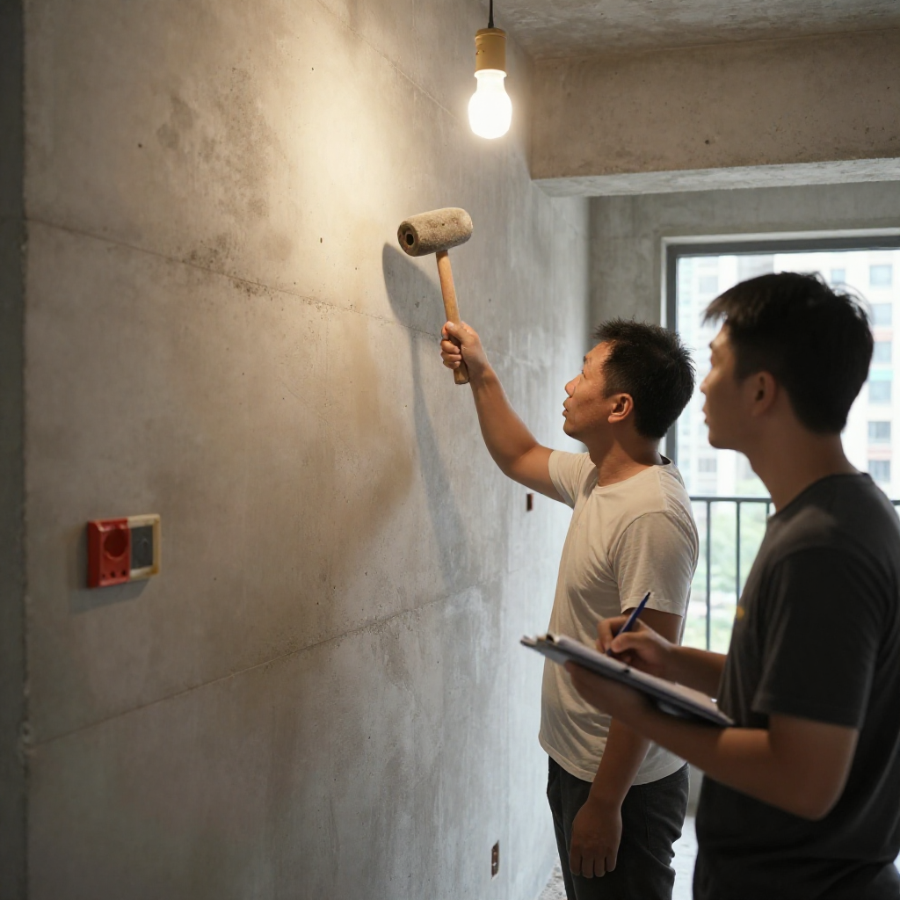
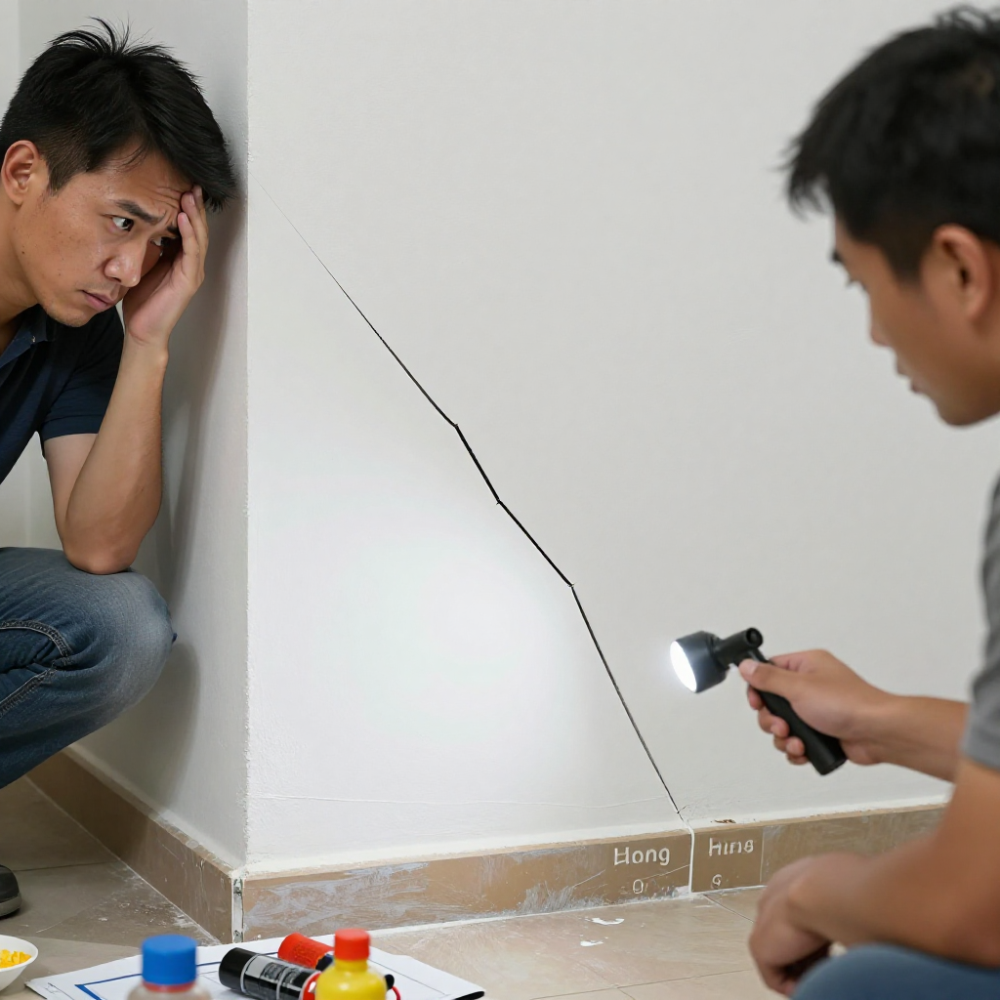

東涌公屋混凝土質量檢查：張丹楓教你一眼分辨結構問題與裝修陷阱

📍 場景：東涌新公屋｜主講：張丹楓（8年全屋定制）｜設計溝通：雲蕾｜老師傅：陳師傅（25年經驗）｜WhatsApp 報價：852 5190 2328
序幕：新聞話東涌公屋要驗混凝土，係咪樓有問題？
我係張丹楓，做咗8年裝修，專做香港小戶型定制家具。今日經過東涌，見到房委會檢測車停喺樓下，阿杰就問：「師傅，係咪呢棟樓有問題？」我話：阿杰，你睇新聞淨係睇標題。其實每棟新樓都要抽檢，公屋一向把關嚴謹，但趕工期難免有細節忽略。
我帶咗25年老師傅陳師傅同行——佢一眼就睇得出邊度係空鼓、邊度係正常收縮紋。
第一幕：空鼓錘敲牆，師傅教路點樣驗質量
上到目標單位，業主張先生已經喺度等：「師傅，上次颱風後窗角有條裂縫，係咪結構有問題？」我哋用空鼓錘輕輕敲擊牆身，陳師傅側耳聽。
「張生你聽呢下，呢度有空鼓聲。唔係整棟樓有問題，係呢個位置批盪做得唔夠實。」
「陳師傅用空鼓錘敲，聲音實心代表冇問題，聲音空洞就係有空鼓。呢個單位有幾處係局部施工問題，唔影響結構安全，但係唔整第日批盪會剝落。」
「師傅，裝修師傅唔係只係做表面，仲要識睇結構？」
「阿杰，香港地方細，樓又密，安全永遠係第一位。天花板混凝土澆築唔夠密實，以後鑽孔裝燈就會掉渣。」

第二幕：窗角裂縫唔使慌，環氧樹脂修補有方法
張生指住窗角裂縫：「師傅，係咪樓體結構有問題？」
「張生你睇，裂縫闊度唔到0.3毫米，係常見嘅熱脹冷縮或者輕微沉降造成，唔影響安全。但係為咗美觀同防滲水，我哋可以用環氧樹脂灌縫，再重新批盪。」
「材料加人工大概三千蚊。但如果裂縫繼續擴大，就要請結構工程師上嚟檢查。」

第三幕：批盪之前一定要做防水層
我同阿杰準備離開，陳師傅總結幾點俾張生。
「阿杰，記住，裝修唔係睇表面。牆身材料、混凝土強度、鋼筋位置都要了解。香港天氣潮濕，批盪之前一定要做好防水層，唔好貪平用國產膩子——甲醛超標，香港熱天甲醛釋放更快。」
「陳師傅話得啱，健康最重要。」
尾聲：安全永遠第一位
離開時我望住東涌樓群，想起師傅教落嘅一句說話：「裝修無小事，安全第一位。」二十五年間見過太多趕工出問題嘅例子，我而家帶阿杰，同樣日日提醒自己。
專業嘅事，交給專業嘅人——我哋做好自己本分，確保施工安全，對得住客戶，就係我哋呢行嘅價值。
❓ 公屋混凝土三問
Q1：新公屋有空鼓係咪代表樓有危險？
唔係。空鼓係局部批盪施工問題，常見於構件交接位或者施工縫。裂縫闊度小於0.3毫米、冇持續擴大，就唔影響結構安全。但係要及早修補，否則批盪會剝落。
Q2：窗角裂縫修補幾錢？
環氧樹脂灌縫加重新批盪，材料加人工大概三千蚊。如果裂縫持續擴大，就要請結構工程師上嚟評估。
Q3：批盪之前要注意咩？
一定要做好防水層，唔好貪平用國產膩子（甲醛超標）。香港天氣潮濕，牆身容易發霉，要用防酶防霉膩子。
提示：圖片為 Z-Image-Turbo AI 生成的場景示意圖，不是實際住戶單位。